人工神经网络（英语：Artificial Neural Network，ANN），简称神经网络（Neural Network，NN）或类神经网络，在机器学习和认知科学领域，是一种模仿生物神经网络（动物的中枢神经系统，特别是大脑）的结构和功能的数学模型或计算模型，用于对函数进行估计或近似。
神经网络由大量的人工神经元联结进行计算。大多数情况下人工神经网络能在外界信息的基础上改变内部结构，是一种自适应系统，通俗的讲就是具备学习功能。现代神经网络是一种非线性统计性数据建模工具。
神经元
神经元示意图：

- a1~an为输入向量的各个分量
- w1~wn为神经元各个突触的权值
- b为偏置
- f为传递函数，通常为非线性函数。一般有Sigmoid(), ReLU(), Softmax()。
- t为神经元输出
神经元的数学表示是：$t=f(\vec{W^{‘}}\vec{A}+b)$
- $\vec{W}$为权向量，$\vec{W^{‘}}$为$\vec{W}$的转置
- $\vec{A}$为输入向量
- $b$为偏置
- $f$为传递函数
可见，一个神经元的功能是求得输入向量与权向量的内积后，经一个非线性传递函数得到一个标量结果。
激活函数
- Sigmoid函数
Sigmoid函数也称S型激活函数，其将加权和转换为介于 0 和 1 之间的值。
$$F(x)=\frac{1} {1+e^{-x}}$$
曲线图如下：
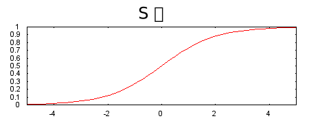
- ReLU函数
相较于 S 型函数等平滑函数，以下修正线性单元激活函数（简称为 ReLU）的效果通常要好一点，同时还非常易于计算。
$$F(x)=max(0,x)$$
ReLU 的优势在于它基于实证发现（可能由 ReLU 驱动），拥有更实用的响应范围。S 型函数的响应性在两端相对较快地减少。
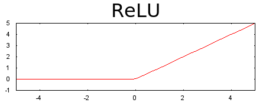
- Softmax函数
Softmax函数用于多类别神经网络。在多类别问题中，Softmax 会为每个类别分配一个用小数表示的概率。这些用小数表示的概率相加之和必须是 1.0。
Softmax 方程式如下所示：
$$p(y = j|\textbf{x}) = \frac{e^{(\textbf{w}j^{T}\textbf{x} + b_j)}}{\sum{k\in K} {e^{(\textbf{w}_k^{T}\textbf{x} + b_k)}} }$$
请注意，此公式本质上是将逻辑回归公式延伸到了多类别。
Softmax 层是紧挨着输出层之前的神经网络层。Softmax 层必须和输出层拥有一样的节点数。
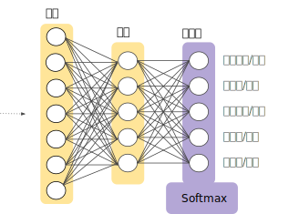
神经元网络
神经元网络可分为单层神经元网络和多层神经元网络。而常用的是多层神经元网络。
多层神经元网络
一种常见的多层结构的前馈网络（Multilayer Feedforward Network）由三部分组成，如图2所示：

- 输入层（Input layer），众多神经元（Neuron）接受大量非线形输入消息。输入的消息称为输入向量。
- 输出层（Output layer），消息在神经元链接中传输、分析、权衡，形成输出结果。输出的消息称为输出向量。
- 隐藏层（Hidden layer），简称“隐层”，是输入层和输出层之间众多神经元和链接组成的各个层面。隐层可以有一层或多层。隐层的节点（神经元）数目不定，但数目越多神经网络的非线性越显著，从而神经网络的强健性（robustness）（控制系统在一定结构、大小等的参数摄动下，维持某些性能的特性）更显著。习惯上会选输入节点1.2至1.5倍的节点。
这种网络一般称为感知器（对单隐藏层）或多层感知器（对多隐藏层），神经网络的类型已经演变出很多种，这种分层的结构也并不是对所有的神经网络都适用。
训练神经网络
通常使用反向传播算法训练神经网络[3]，但一些常见情况都会导致反向传播算法出错。
- 梯度消失
较低层（更接近输入）的梯度可能会变得非常小。在深度网络中，计算这些梯度时，可能涉及许多小项的乘积。
当较低层的梯度逐渐消失到 0 时，这些层的训练速度会非常缓慢，甚至不再训练。
ReLU 激活函数有助于防止梯度消失。
- 梯度爆炸
如果网络中的权重过大，则较低层的梯度会涉及许多大项的乘积。在这种情况下，梯度就会爆炸：梯度过大导致难以收敛。
批标准化可以降低学习速率，因而有助于防止梯度爆炸。
- ReLU 单元消失
一旦 ReLU 单元的加权和低于 0，ReLU 单元就可能会停滞。它会输出对网络输出没有任何贡献的 0 激活，而梯度在反向传播算法期间将无法再从中流过。由于梯度的来源被切断，ReLU 的输入可能无法作出足够的改变来使加权和恢复到 0 以上。
降低学习速率有助于防止 ReLU 单元消失。
- 丢弃正则化
这是称为丢弃的另一种形式的正则化，可用于神经网络。其工作原理是，在梯度下降法的每一步中随机丢弃一些网络单元。丢弃得越多，正则化效果就越强。
卷积神经网络
卷积神经⽹络（convolutional neural network）是含有卷积层（convolutional layer）的神经⽹
络。下面将按时间顺序介绍各类经典的卷积神经网络。
卷积神经⽹络（LeNet）
LeNet是⼀个早期⽤来识别⼿写数字图像的卷积神经⽹络，于80 年代末期提出。这个名字来源于LeNet论⽂的第⼀作者Yann LeCun。LeNet展⽰了通过梯度下降训练卷积神经⽹络可以达到⼿写数字识别在当时最先进的结果。这个奠基性的⼯作第⼀次将卷积神经⽹络推上舞台，为世⼈所知。
LeNet结构
LeNet一共有7层（不包括输入层），可分为卷积层块和全连接层块两个部分，如图6所示。
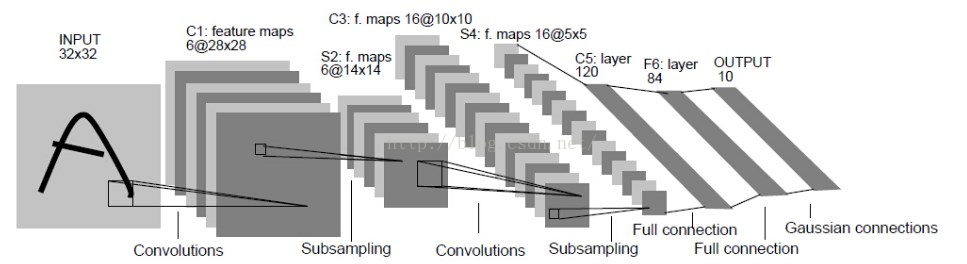
- 输入层：输入图像的大小为32*32，这要比mnist数据库中的最大字母（28*28）还大。作用： 图像较大，这样做的目的是希望潜在的明显特征，比如笔画断续，角点等能够出现在最高层特征监测子感受野的中心。
- 卷积层：C1，C3，C5为卷积层，S2，S4为降采样层。
- 全连接层：F6为全连接层，还有一个输出层。
深度卷积神经⽹络（AlexNet）
2012年，AlexNet横空出世。这个模型的名字来源于论⽂第⼀作者的姓名Alex Krizhevsky。AlexNet使⽤了8层卷积神经⽹络，并以很⼤的优势赢得了ImageNet 2012图像识别挑战赛。它⾸次证明了学习到的特征可以超越⼿⼯设计的特征，从而⼀举打破计算机视觉研究的前状。
AlexNet与LeNet区别
AlexNet与LeNet的设计理念⾮常相似，但也有显著的区别。
第⼀，与相对较小的LeNet相⽐，AlexNet包含8层变换，其中有5层卷积和2层全连接隐藏层，以及1个全连接输出层。
第⼆，AlexNet将sigmoid激活函数改成了更加简单的ReLU激活函数。
第三，AlexNet通过丢弃法来控制全连接层的模型复杂度。
第四，AlexNet引⼊了⼤量的图像增⼴，如翻转、裁剪和颜⾊变化，从而进⼀步扩⼤数据集来缓解过拟合。
AlexNet结构
AlexNet的一些参数和结构图：
- 卷积层：5层
- 全连接层：3层
- 深度：8层
- 参数个数：60M
- 神经元个数：650k
- 分类数目：1000类
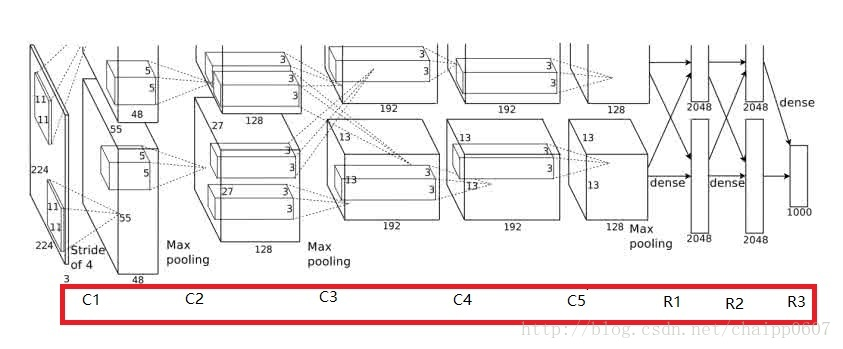
由于当时的显卡容量问题，AlexNet 的60M个参数无法全部放在一张显卡上操作，所以采用了两张显卡分开操作的形式，其中在C3，R1，R2，R3层上出现交互，所谓的交互就是通道的合并，是一种串接操作。
使⽤重复元素的⽹络（VGG网络）
VGG的名字来源于论⽂作者所在的实验室Visual Geometry Group。2014年VGG提出了可以通过重复使⽤简单的基础块来构建深度模型的思路。
VGG块的组成规律是：连续使⽤数个相同的填充为1、窗口形状为3*3的卷积层后接上⼀个步幅为2、窗口形状为2*2的最⼤池化层。卷积层保持输⼊的⾼和宽不变，而池化层则对其减半。
VGG相比AlexNet的一个改进是采用连续的几个3x3的卷积核代替AlexNet中的较大卷积核（11x11，7x7，5x5）。对于给定的感受野（与输出有关的输入图片的局部大小），采用堆积的小卷积核是优于采用大的卷积核，因为多层非线性层可以增加网络深度来保证学习更复杂的模式，而且代价还比较小（参数更少）。
与AlexNet和LeNet⼀样，VGG⽹络由卷积层模块后接全连接层模块构成。卷积层模块串联数个vgg_block，其超参数由变量conv_arch定义。该变量指定了每个VGG块⾥卷积层个数和输出通道数。全连接模块则跟AlexNet中的⼀样。
构造⼀个最简单的VGG⽹络VGG-11。它有5个卷积块，前2块使⽤单卷积层，而后3块使⽤双卷积层。第⼀块的输出通道是64，之后每次对输出通道数翻倍，直到变为512。
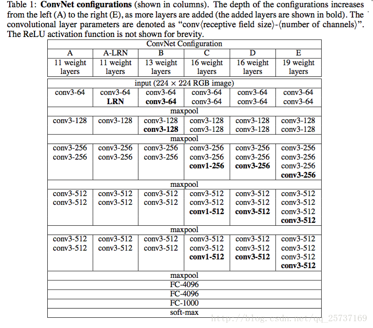
⽹络中的⽹络（NiN）
在AlexNet问世不久，⽹络中的⽹络（NiN）提出即串联多个由卷积层和“全连接”层构成的小⽹络来构建⼀个深层⽹络。
卷积层的输⼊和输出通常是四维数组（样本，通道，⾼，宽），而全连接层的输⼊和输出则通常是⼆维数组（样本，特征）。如果想在全连接层后再接上卷积层，则需要将全连接层的输出变换为四维。1*1卷积层可以看成全连接层中空间维度（⾼和宽）上的每个元素相当于样本，通道相当于特征。因此， NiN使⽤1*1卷积层来替代全连接层，从而使空间信息能够⾃然传递到后⾯的层中去。
NiN结构（右边）与AlexNet、VGG（左边）的区别：
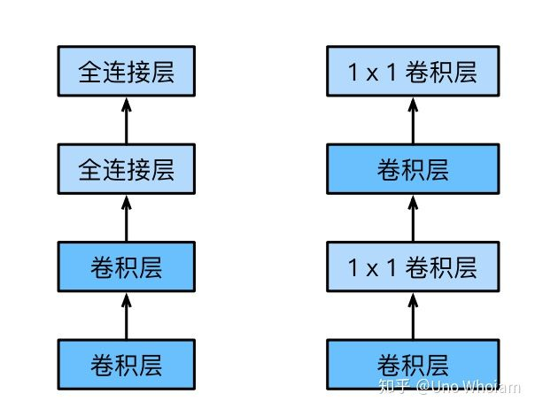
NiN块是NiN中的基础块。它由⼀个卷积层加两个充当全连接层的1 * 1卷积层串联而成。其中第⼀个卷积层的超参数可以⾃⾏设置，而第⼆和第三个卷积层的超参数⼀般是固定的。
NiN重复使⽤由卷积层和代替全连接层的1 * 1卷积层构成的NiN块来构建深层⽹络。NiN去除了容易造成过拟合的全连接输出层，而是将其替换成输出通道数等于标签类别数的NiN块和全局平均池化层。
含并⾏连结的⽹络（GoogLeNet）
在2014年的ImageNet图像识别挑战赛中，⼀个名叫GoogLeNet的⽹络结构⼤放异彩。它虽然在名字上向LeNet致敬，但在⽹络结构上已经很难看到LeNet的影⼦。GoogLeNet吸收了NiN中⽹络串联⽹络的思想，并在此基础上做了很⼤改进。
GoogLeNet中的基础卷积块叫作Inception块，得名于同名电影《盗梦空间》（Inception）。与NiN块相⽐，这个基础块在结构上更加复杂，如图所⽰。

Inception块⾥有4条并⾏的线路。前3条线路使⽤窗口⼤小分别是1 * 1、3 * 3和5 * 5的卷积层来抽取不同空间尺⼨下的信息，其中中间2个线路会对输⼊先做1 * 1卷积来减少输⼊通道数，以降低模型复杂度。第四条线路则使⽤3*3最⼤池化层，后接1*1卷积层来改变通道数。4条线路都使⽤了合适的填充来使输⼊与输出的⾼和宽⼀致。最后我们将每条线路的输出在通道维上连结，并输⼊接下来的层中去。
Inception块中可以⾃定义的超参数是每个层的输出通道数，以此来控制模型复杂度。
GoogLeNet跟VGG⼀样，在主体卷积部分中使⽤5个模块（block），每个模块之间使⽤步幅为2的3*3最⼤池化层来减小输出⾼宽。
残差网络（ResNet）
让我们先思考一个问题：对神经网络模型添加新的层，充分训练后的模型是否只可能更有效地降低训练误差？理论上，原模型解的空间只是新模型解的空间的子空间。也就是说，如果我们能将新添加的层训练成恒等映射 f(x)=x ，新模型和原模型将同样有效。由于新模型可能得出更优的解来拟合训练数据集，因此添加层似乎更容易降低训练误差。然而在实践中，添加过多的层后训练误差往往不降反升。即使利用批量归一化带来的数值稳定性使训练深层模型更加容易，该问题仍然存在。针对这一问题，何恺明等人提出了残差网络（ResNet）。它在2015年的ImageNet图像识别挑战赛夺魁，并深刻影响了后来的深度神经网络的设计。
让我们聚焦于神经网络局部。如图11所示，设输入为 x 。假设我们希望学出的理想映射为 f(x) ，从而作为图11上方激活函数的输入。左图虚线框中的部分需要直接拟合出该映射 f(x) ，而右图虚线框中的部分则需要拟合出有关恒等映射的残差映射 f(x)−x 。残差映射在实际中往往更容易优化。以本节开头提到的恒等映射作为我们希望学出的理想映射 f(x) 。我们只需将图11中右图虚线框内上方的加权运算（如仿射）的权重和偏差参数学成0，那么 f(x) 即为恒等映射。实际中，当理想映射 f(x) 极接近于恒等映射时，残差映射也易于捕捉恒等映射的细微波动。图11右图也是ResNet的基础块，即残差块（residual block）。在残差块中，输入可通过跨层的数据线路更快地向前传播。
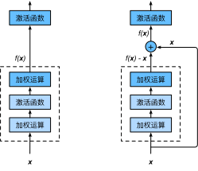
ResNet沿用了VGG全 3×3 卷积层的设计。残差块里首先有2个有相同输出通道数的 3×3 卷积层。每个卷积层后接一个批量归一化层和ReLU激活函数。然后我们将输入跳过这两个卷积运算后直接加在最后的ReLU激活函数前。这样的设计要求两个卷积层的输出与输入形状一样，从而可以相加。如果想改变通道数，就需要引入一个额外的 1×1 卷积层来将输入变换成需要的形状后再做相加运算。
稠密连接网络（DenseNet）
稠密连接网络（DenseNet）与ResNet的主要区别如图12所示。
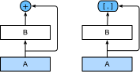
图12中将部分前后相邻的运算抽象为模块A和模块B。与ResNet的主要区别在于，DenseNet里模块B的输出不是像ResNet那样和模块A的输出相加，而是在通道维上连结。这样模块A的输出可以直接传入模块B后面的层。在这个设计里，模块A直接跟模块B后面的所有层连接在了一起。这也是它被称为“稠密连接”的原因。
DenseNet的主要构建模块是稠密块（dense block）和过渡层（transition layer）。前者定义了输入和输出是如何连结的，后者则用来控制通道数，使之不过大。
MobileNets：同样的卷积层，更少的参数
MobileNet，正如其名，这是一个非常简单快速并且准确率也不错的CNN网络结构，它大大减少了网络层的参数数量，使得网络的前向传播和后向传播的运算量大幅减少，最终成为了一个效率极高的CNN网络。
ShuffleNets：Group convolution+Channel Shuffle
ShuffleNet是Face++提出的一种轻量化网络结构，主要思路是使用Group convolution和Channel shuffle改进ResNet，可以看作是ResNet的压缩版本。
循环神经网络
循环神经网络是为更好地处理时序信息而设计的。它引入状态变量来存储过去的信息，并用其与当前的输入共同决定当前的输出。
循环神经网络常用于处理序列数据，如一段文字或声音、购物或观影的顺序，甚至是图像中的一行或一列像素。因此，循环神经网络有着极为广泛的实际应用，如语言模型、文本分类、机器翻译、语音识别、图像分析、手写识别和推荐系统。
现在我们考虑输入数据存在时间相关性的情况。假设 $X_t∈R^{n×d}$ 是序列中时间步 $t$ 的小批量输入，$H_t∈R^{n×h}$ 是该时间步的隐藏变量。与多层感知机不同的是，这里我们保存上一时间步的隐藏变量 $H_{t−1}$ ，并引入一个新的权重参数 $W_{hh}∈R^{h×h}$ ，该参数用来描述在当前时间步如何使用上一时间步的隐藏变量。具体来说，时间步 $t$ 的隐藏变量的计算由当前时间步的输入和上一时间步的隐藏变量共同决定：
$$H_t=ϕ(X_tW_{xh}+H_{t−1}W_{hh}+b_h)$$
与多层感知机相比，我们在这里添加了 $H_{t−1}W_{hh}$一项。由上式中相邻时间步的隐藏变量 $H_t$ 和 $H_{t−1}$ 之间的关系可知，这里的隐藏变量能够捕捉截至当前时间步的序列的历史信息，就像是神经网络当前时间步的状态或记忆一样。因此，该隐藏变量也称为隐藏状态。由于隐藏状态在当前时间步的定义使用了上一时间步的隐藏状态，上式的计算是循环的。使用循环计算的网络即循环神经网络（recurrent neural network）。
循环神经网络有很多种不同的构造方法。含上式所定义的隐藏状态的循环神经网络是极为常见的一种。若无特别说明，本章中的循环神经网络均基于上式中隐藏状态的循环计算。在时间步 $t$ ，输出层的输出和多层感知机中的计算类似：
$$O_t=H_tW_{hq}+b_q$$
循环神经网络的参数包括隐藏层的权重 $W_{xh}∈R^{d×h}$ 、 $W_{hh}∈R^{h×h}$ 和偏差 $b_h∈R^{1×h}$ ，以及输出层的权重 $W_{hq}∈R^{h×q}$ 和偏差 $b_q∈R^{1×q}$ 。值得一提的是，即便在不同时间步，循环神经网络也始终使用这些模型参数。因此，循环神经网络模型参数的数量不随时间步的增加而增长。
图13展示了循环神经网络在3个相邻时间步的计算逻辑。在时间步 $t$ ，隐藏状态的计算可以看成是将输入 $X_t$ 和前一时间步隐藏状态 $H_{t−1}$ 连结后输入一个激活函数为 $ϕ$ 的全连接层。该全连接层的输出就是当前时间步的隐藏状态 $H_t$ ，且模型参数为 $W_{xh}$ 与 $W_{hh}$ 的连结，偏差为 $b_h$ 。当前时间步 $t$ 的隐藏状态 $H_t$ 将参与下一个时间步 $t+1$ 的隐藏状态 $H_{t+1}$ 的计算，并输入到当前时间步的全连接输出层。
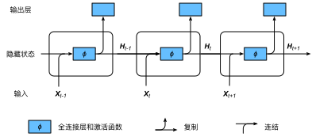
门控循环单元（GRU）
当时间步数较大或者时间步较小时，循环神经网络的梯度较容易出现衰减或爆炸。虽然裁剪梯度可以应对梯度爆炸，但无法解决梯度衰减的问题。通常由于这个原因，循环神经网络在实际中较难捕捉时间序列中时间步距离较大的依赖关系。
门控循环神经网络（gated recurrent neural network）的提出，正是为了更好地捕捉时间序列中时间步距离较大的依赖关系。它通过可以学习的门来控制信息的流动。其中，门控循环单元（gated recurrent unit，GRU）是一种常用的门控循环神经网络。
门控循环单元引入了重置门（reset gate）和更新门（update gate）的概念，从而修改了循环神经网络中隐藏状态的计算方式。门控循环单元中的重置门和更新门的输入均为当前时间步输入 $X_t$ 与上一时间步隐藏状态 $H_{t−1}$ ，输出由激活函数为sigmoid函数的全连接层计算得到。

具体来说，时间步 $t$ 的候选隐藏状态 $\tilde{\boldsymbol{H}}_t∈R^{n×h}$ 的计算为
$$\tilde{\boldsymbol{H}}t=tanh(X_tW{xh}+(R_t⊙H_{t−1})W_{hh}+b_h)$$
其中 $W_{xh}∈R^{d×h}$ 和 $W_{hh}∈R^{h×h}$ 是权重参数， $b_h∈R^{1×h}$ 是偏差参数。从上面这个公式可以看出，重置门控制了上一时间步的隐藏状态如何流入当前时间步的候选隐藏状态。而上一时间步的隐藏状态可能包含了时间序列截至上一时间步的全部历史信息。因此，重置门可以用来丢弃与预测无关的历史信息。
最后，时间步 $t$ 的隐藏状态 $H_t∈R^{n×h}$ 的计算使用当前时间步的更新门 $Z_t$ 来对上一时间步的隐藏状态 $H_{t−1}$ 和当前时间步的候选隐藏状态 $\tilde{\boldsymbol{H}}_t$ 做组合：
$$Ht=Zt⊙Ht−1+(1−Zt)⊙\tilde{\boldsymbol{H}}_t$$
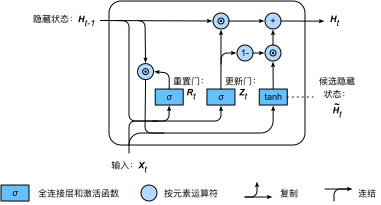
值得注意的是，更新门可以控制隐藏状态应该如何被包含当前时间步信息的候选隐藏状态所更新。
我们对门控循环单元的设计稍作总结：
- 重置门有助于捕捉时间序列里短期的依赖关系；
- 更新门有助于捕捉时间序列里长期的依赖关系。
长短期记忆（LSTM）
LSTM 中引入了3个门，即输入门（input gate）、遗忘门（forget gate）和输出门（output gate），以及与隐藏状态形状相同的记忆细胞（某些文献把记忆细胞当成一种特殊的隐藏状态），从而记录额外的信息。
输入门、遗忘门和输出门
与门控循环单元中的重置门和更新门一样，如图16所示，长短期记忆的门的输入均为当前时间步输入 $X_t$ 与上一时间步隐藏状态 $H_{t−1}$ ，输出由激活函数为sigmoid函数的全连接层计算得到。如此一来，这3个门元素的值域均为 [0,1] 。

具体来说，假设隐藏单元个数为$h$，给定时间步$t$的小批量输入$\boldsymbol{X}t \in \mathbb{R}^{n \times d}$（样本数为$n$，输入个数为$d$）和上一时间步隐藏状态$\boldsymbol{H}_{t-1} \in \mathbb{R}^{n \times h}$。 时间步$t$的输入门$\boldsymbol{I}_t \in \mathbb{R}^{n \times h}$、遗忘门$\boldsymbol{F}_t \in \mathbb{R}^{n \times h}$和输出门$\boldsymbol{O}_t \in \mathbb{R}^{n \times h}$分别计算如下：
$$ \begin{aligned} \boldsymbol{I}t &= \sigma(\boldsymbol{X}_t \boldsymbol{W}{xi} + \boldsymbol{H}{t-1} \boldsymbol{W}{hi} + \boldsymbol{b}_i)\end{aligned}$$
$$\begin{aligned} \boldsymbol{F}t &= \sigma(\boldsymbol{X}_t \boldsymbol{W}{xf} + \boldsymbol{H}{t-1} \boldsymbol{W}{hf} + \boldsymbol{b}_f)\end{aligned}$$
$$\begin{aligned} \boldsymbol{O}t &= \sigma(\boldsymbol{X}_t \boldsymbol{W}{xo} + \boldsymbol{H}{t-1} \boldsymbol{W}{ho} + \boldsymbol{b}_o)\end{aligned} $$
其中的$\boldsymbol{W}{xi}, \boldsymbol{W}{xf}, \boldsymbol{W}{xo} \in \mathbb{R}^{d \times h}$和$\boldsymbol{W}{hi}, \boldsymbol{W}{hf}, \boldsymbol{W}{ho} \in \mathbb{R}^{h \times h}$是权重参数，$\boldsymbol{b}_i, \boldsymbol{b}_f, \boldsymbol{b}_o \in \mathbb{R}^{1 \times h}$是偏差参数。
候选记忆细胞
接下来，长短期记忆需要计算候选记忆细胞$\tilde{\boldsymbol{C}}_t$。它的计算与上面介绍的3个门类似，但使用了值域在$[-1, 1]$的tanh函数作为激活函数，如图17所示。

具体来说，时间步$t$的候选记忆细胞$\tilde{\boldsymbol{C}}_t \in \mathbb{R}^{n \times h}$的计算为
$$\tilde{\boldsymbol{C}}t = \text{tanh}(\boldsymbol{X}t \boldsymbol{W}{xc} + \boldsymbol{H}{t-1} \boldsymbol{W}_{hc} + \boldsymbol{b}_c),$$
其中$\boldsymbol{W}{xc} \in \mathbb{R}^{d \times h}$和$\boldsymbol{W}{hc} \in \mathbb{R}^{h \times h}$是权重参数，$\boldsymbol{b}_c \in \mathbb{R}^{1 \times h}$是偏差参数。
记忆细胞
我们可以通过元素值域在$[0, 1]$的输入门、遗忘门和输出门来控制隐藏状态中信息的流动，这一般也是通过使用按元素乘法（符号为$\odot$）来实现的。当前时间步记忆细胞$\boldsymbol{C}_t \in \mathbb{R}^{n \times h}$的计算组合了上一时间步记忆细胞和当前时间步候选记忆细胞的信息，并通过遗忘门和输入门来控制信息的流动：
$$\boldsymbol{C}_t = \boldsymbol{F}t \odot \boldsymbol{C}{t-1} + \boldsymbol{I}_t \odot \tilde{\boldsymbol{C}}_t.$$
如图6.9所示，遗忘门控制上一时间步的记忆细胞$\boldsymbol{C}_{t-1}$中的信息是否传递到当前时间步，而输入门则控制当前时间步的输入$\boldsymbol{X}_t$通过候选记忆细胞$\tilde{\boldsymbol{C}}_t$如何流入当前时间步的记忆细胞。如果遗忘门一直近似1且输入门一直近似0，过去的记忆细胞将一直通过时间保存并传递至当前时间步。这个设计可以应对循环神经网络中的梯度衰减问题，并更好地捕捉时间序列中时间步距离较大的依赖关系。

隐藏状态
有了记忆细胞以后，接下来我们还可以通过输出门来控制从记忆细胞到隐藏状态$\boldsymbol{H}_t \in \mathbb{R}^{n \times h}$的信息的流动：
$$\boldsymbol{H}_t = \boldsymbol{O}_t \odot \text{tanh}(\boldsymbol{C}_t).$$
这里的tanh函数确保隐藏状态元素值在-1到1之间。需要注意的是，当输出门近似1时，记忆细胞信息将传递到隐藏状态供输出层使用；当输出门近似0时，记忆细胞信息只自己保留。图6.10展示了长短期记忆中隐藏状态的计算。

深度循环神经网络
在深度学习应用里，我们通常会用到含有多个隐藏层的循环神经网络，也称作深度循环神经网络。图20演示了一个有 L 个隐藏层的深度循环神经网络，每个隐藏状态不断传递至当前层的下一时间步和当前时间步的下一层。
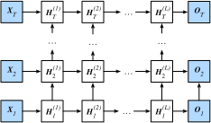
具体来说，在时间步$t$里，设小批量输入$\boldsymbol{X}_t \in \mathbb{R}^{n \times d}$（样本数为$n$，输入个数为$d$），第$\ell$隐藏层（$\ell=1,\ldots,L$）的隐藏状态为$\boldsymbol{H}_t^{(\ell)} \in \mathbb{R}^{n \times h}$（隐藏单元个数为$h$），输出层变量为$\boldsymbol{O}_t \in \mathbb{R}^{n \times q}$（输出个数为$q$），且隐藏层的激活函数为$\phi$。第1隐藏层的隐藏状态和之前的计算一样：
$$\boldsymbol{H}t^{(1)} = \phi(\boldsymbol{X}_t \boldsymbol{W}{xh}^{(1)} + \boldsymbol{H}{t-1}^{(1)} \boldsymbol{W}{hh}^{(1)} + \boldsymbol{b}_h^{(1)}),$$
其中权重$\boldsymbol{W}{xh}^{(1)} \in \mathbb{R}^{d \times h}$、$\boldsymbol{W}{hh}^{(1)} \in \mathbb{R}^{h \times h}$和偏差 $\boldsymbol{b}_h^{(1)} \in \mathbb{R}^{1 \times h}$分别为第1隐藏层的模型参数。
当$1 < \ell \leq L$时，第$\ell$隐藏层的隐藏状态的表达式为
$$\boldsymbol{H}t^{(\ell)} = \phi(\boldsymbol{H}_t^{(\ell-1)} \boldsymbol{W}{xh}^{(\ell)} + \boldsymbol{H}{t-1}^{(\ell)} \boldsymbol{W}{hh}^{(\ell)} + \boldsymbol{b}_h^{(\ell)}),$$
其中权重$\boldsymbol{W}{xh}^{(\ell)} \in \mathbb{R}^{h \times h}$、$\boldsymbol{W}{hh}^{(\ell)} \in \mathbb{R}^{h \times h}$和偏差 $\boldsymbol{b}_h^{(\ell)} \in \mathbb{R}^{1 \times h}$分别为第$\ell$隐藏层的模型参数。
最终，输出层的输出只需基于第$L$隐藏层的隐藏状态：
$$\boldsymbol{O}t = \boldsymbol{H}_t^{(L)} \boldsymbol{W}{hq} + \boldsymbol{b}_q,$$
其中权重$\boldsymbol{W}_{hq} \in \mathbb{R}^{h \times q}$和偏差$\boldsymbol{b}_q \in \mathbb{R}^{1 \times q}$为输出层的模型参数。
同多层感知机一样，隐藏层个数$L$和隐藏单元个数$h$都是超参数。此外，如果将隐藏状态的计算换成门控循环单元或者长短期记忆的计算，我们可以得到深度门控循环神经网络。
双向循环神经网络
之前介绍的循环神经网络模型都是假设当前时间步是由前面的较早时间步的序列决定的，因此它们都将信息通过隐藏状态从前往后传递。有时候，当前时间步也可能由后面时间步决定。例如，当我们写下一个句子时，可能会根据句子后面的词来修改句子前面的用词。双向循环神经网络通过增加从后往前传递信息的隐藏层来更灵活地处理这类信息。图21演示了一个含单隐藏层的双向循环神经网络的架构。

#生成模型
在概率统计理论中, 生成模型是指能够随机生成观测数据的模型，尤其是在给定某些隐含参数的条件下。它给观测值和标注数据序列指定一个联合概率分布。在机器学习中，生成模型可以用来直接对数据建模（例如根据某个变量的概率密度函数进行数据采样），也可以用来建立变量间的条件概率分布。条件概率分布可以由生成模型根据贝叶斯定理形成。
香农 (1948) 给出了有一个英语双词频率表生成句子的例子。可以生成如“representing and speedily is an good”这种句子。一开始并不能生成正确的英文句子，但随着词频表由双词扩大为三词甚至多词，生成的句子也就慢慢的成型了。
生成模型的定义与判别模型相对应：生成模型是所有变量的全概率模型，而判别模型是在给定观测变量值前提下目标变量条件概率模型。因此生成模型能够用于模拟（即生成）模型中任意变量的分布情况，而判别模型只能根据观测变量得到目标变量的采样。判别模型不对观测变量的分布建模，因此它不能够表达观测变量与目标变量之间更复杂的关系。因此，生成模型更适用于无监督的任务，如分类和聚类。
生成对抗网络
生成对抗网络（英语：Generative Adversarial Network，简称GAN）是非监督式学习的一种方法，通过让两个神经网络相互博弈的方式进行学习。该方法由伊恩·古德费洛等人于2014年提出。[1]
生成对抗网络由一个生成网络与一个判别网络组成。生成网络从潜在空间（latent space）中随机采样作为输入，其输出结果需要尽量模仿训练集中的真实样本。判别网络的输入则为真实样本或生成网络的输出，其目的是将生成网络的输出从真实样本中尽可能分辨出来。而生成网络则要尽可能地欺骗判别网络。两个网络相互对抗、不断调整参数，最终目的是使判别网络无法判断生成网络的输出结果是否真实。[2][1][3]
生成对抗网络常用于生成以假乱真的图片。[4]此外，该方法还被用于生成视频[5]、三维物体模型[6]等。
强化学习
强化学习（英语：Reinforcement learning，简称RL）是机器学习中的一个领域，强调如何基于环境而行动，以取得最大化的预期利益。其灵感来源于心理学中的行为主义理论，即有机体如何在环境给予的奖励或惩罚的刺激下，逐步形成对刺激的预期，产生能获得最大利益的习惯性行为。这个方法具有普适性，因此在其他许多领域都有研究，例如博弈论、控制论、运筹学、信息论、仿真优化、多主体系统学习、群体智能、统计学以及遗传算法。在运筹学和控制理论研究的语境下，强化学习被称作“近似动态规划”（approximate dynamic programming，ADP）。在最优控制理论中也有研究这个问题，虽然大部分的研究是关于最优解的存在和特性，并非是学习或者近似方面。在经济学和博弈论中，强化学习被用来解释在有限理性的条件下如何出现平衡。
在机器学习问题中，环境通常被规范为马可夫决策过程（MDP），所以许多强化学习算法在这种情况下使用动态规划技巧。传统的技术和强化学习算法的主要区别是，后者不需要关于MDP的知识，而且针对无法找到确切方法的大规模MDP。
强化学习和标准的监督式学习之间的区别在于，它并不需要出现正确的输入/输出对，也不需要精确校正次优化的行为。强化学习更加专注于在线规划，需要在探索（在未知的领域）和遵从（现有知识）之间找到平衡。强化学习中的“探索-遵从”的交换，在多臂老虎机（英语：multi-armed bandit）问题和有限MDP中研究得最多。
理解强化学习
抛开强化学习探索反馈过程，从回合的最终结果看，强化学习也是一种有监督学习。回合最终结果的输赢就是标签，如果最终结果是好的，说明之前的一系列状态动作的决策过程是有效的，反之是无效的。通过不断地学习，最终可得到较优的状态到动作地策略分布Q函数或者状态和动作的值函数。
记忆网络
传统的深度学习模型（RNN、LSTM、GRU等）使用hidden states或者Attention机制作为他们的记忆功能，但是这种方法产生的记忆太小了，无法精确记录一段话中所表达的全部内容，也就是在将输入编码成dense vectors的时候丢失了很多信息。记忆网络采用一种可读写的外部记忆模块，并将其和inference组件联合训练，最终得到一个可以被灵活操作的记忆模块。
参考链接
- 人工神经网络,by wikipedia.
- 神经网络简介,by google.
- 一文详解神经网络 BP 算法原理及 Python 实现,by AI研习社.
- 反向传播算法动态演示, by google.
- 深度学习架构家谱,by hunkim.
- 动手学深度学习,by d2l-zh.
- 神经网络之LeNet结构分析及参数详解,by Genius_zz.
- 经典CNN结构简析：AlexNet、VGG、NIN、GoogLeNet、ResNet etc. ,by Uno Whoiam.
- 一文读懂VGG网络,by Amusi.
- 生成模型,by wikipedia.
- 生成对抗网络,by wikipedia.
- GAN动态演示,by poloclub.
- 强化学习,by wikipedia.
- 25张图让你读懂神经网络架构, by Nicholas_Liu2017.
- 常见的损失函数(loss function)总结,by yyHaker.